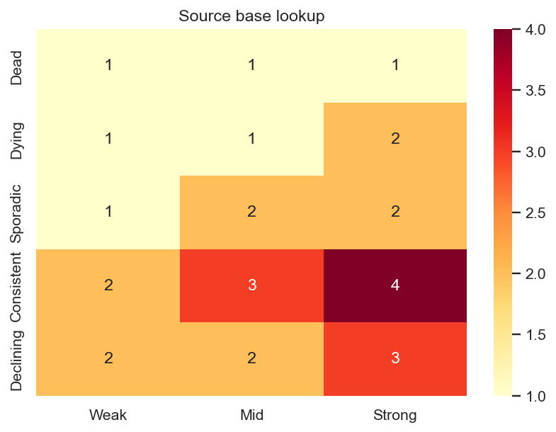
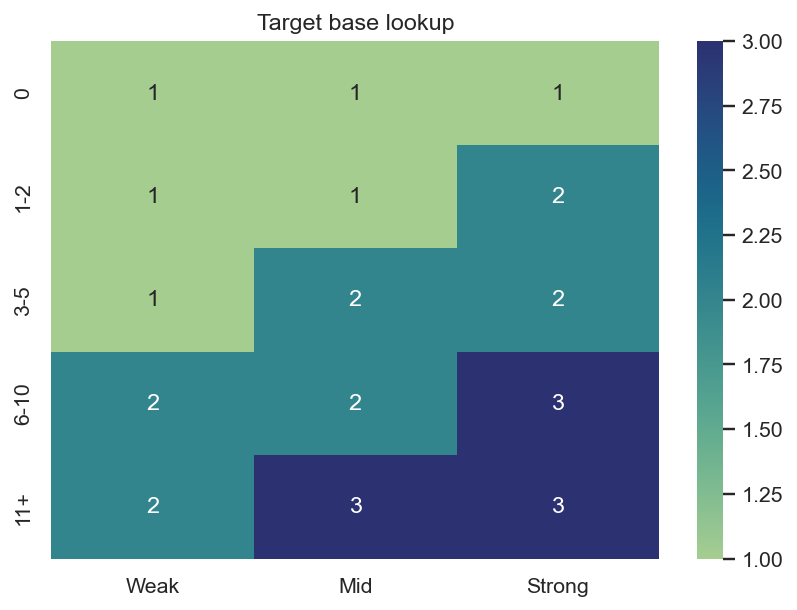
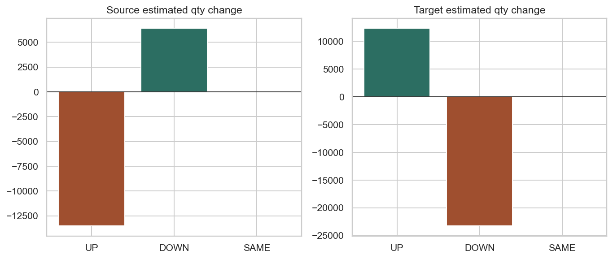

Decision tree v5 pouziva samostatny source a target lookup, pak modifikatory a nakonec tvrde clamp podminky. Cilem je realokovat objem mezi reduction pockets a growth pockets.
| Pattern | Weak | Mid | Strong |
|---|---|---|---|
| Dead | 1 | 1 | 1 |
| Dying | 1 | 1 | 2 |
| Sporadic | 1 | 2 | 2 |
| Consistent | 2 | 3 | 4 |
| Declining | 2 | 2 | 3 |

| SalesBucket | Weak | Mid | Strong |
|---|---|---|---|
| 0 | 1 | 1 | 1 |
| 1-2 | 1 | 1 | 2 |
| 3-5 | 1 | 2 | 2 |
| 6-10 | 2 | 2 | 3 |
| 11+ | 2 | 3 | 3 |

| Modifikator | Podminka | Uprava |
|---|---|---|
| LastSaleGap short | LastSaleGapDays <= 30 | +1 |
| RedistributionRatio high | RedistributionRatio >= 0.75 | +1 |
| Seasonal | XmasLift >= 20% | +1 |
| Product concentration low | ProductConcentrationShare < 10% | +1 |
| Phantom stock | PhantomStockFlag = 1 | -1 |
| Deep inactivity | LastSaleGapDays >= 365 a SalesQty12MPre = 0 | -1 |
| Became delisted | SkuClass -> D/L | ML=0 |
| Modifikator | Podminka | Uprava |
|---|---|---|
| All-sold / ST-1pc high | AllSold4M = 1 nebo ST1_4M >= 90% | +1 |
| Nothing-sold / very low ST | NothingSold4M = 1 nebo ST4M < 25% | -1 |
| Brand-store mismatch | BrandStoreMismatch = 1 | -1 |
| Very low concentration | ProductConcentrationShare < 10% | -1 |
| Became delisted | SkuClass -> D/L | ML=0 |
Lookup urcuje zaklad. Realny ProposedML ve v5 vznikne az po modifikatorech a clamp pravidlech 0-4.
